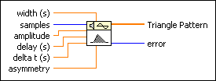
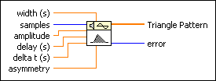
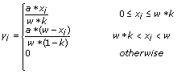
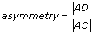
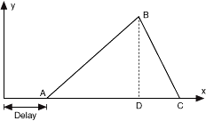

Triangle Pattern VI
Owning Palette: Signal Generation VIs
Requires: Full Development System
Generates an array that contains a triangle pattern.

 Add to the block diagram Add to the block diagram |
 Find on the palette Find on the palette |
Owning Palette: Signal Generation VIs
Requires: Full Development System
Generates an array that contains a triangle pattern.

| Add to the block diagram |
Find on the palette |
 |
width (s) is the width of the Triangle Pattern. width (s) must be greater than zero. The default is 10. |
 |
samples is the number of samples of the Triangle Pattern. If samples is less than 1, the VI sets Triangle Pattern to an empty array and returns an error. The default is 128. |
|
amplitude is the amplitude of the Triangle Pattern. The default is 1.0. |
|
delay (s) shifts the starting point of the Triangle Pattern in the time axis. The default is 0. |
|
delta t (s) is the sampling interval. delta t (s) must be greater than zero. If delta t (s) is less than or equal to zero, the VI sets Triangle Pattern to an empty array and returns an error. The default is 0.1. |
|
asymmetry specifies the asymmetric character of the Triangle Pattern. The asymmetry is the projection of the line segment between the start and the peak divided by the width. The default is 0.5. |
 |
Triangle Pattern returns an array that contains the triangle pattern of samples. |
 |
error returns any error or warning from the VI. You can wire error to the Error Cluster From Error Code VI to convert the error code or warning into an error cluster. |
If the sequence Y represents Triangle Pattern, the Triangle Pattern VI generates the pattern according to the following equations.

for i = 0,1,2, …,N–1, 0 ≤ k ≤ 1,
where w is the width (s), k is the asymmetry, a is the amplitude, N is the samples, and
Xi = Δt*i-d
where d is the delay (s).
The following illustration shows the definition of asymmetry. D is the projection of B on AC.

